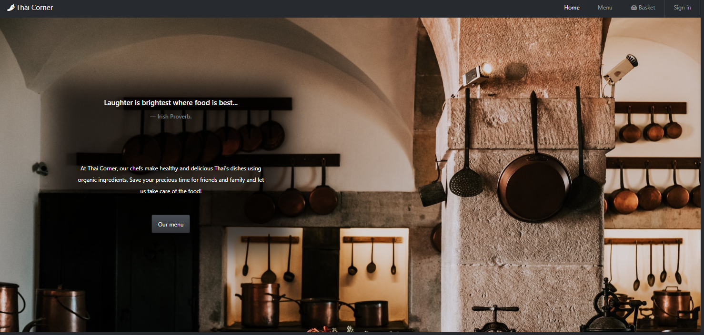

In this online restaurant app, the customers could choose items in the menu. After logging in, they could send the orders to the restaurant owner and check the orders' status. The admin (Id: admin, pass: admin123) could mark the status of the orders. The app is implemented using: React, React-Bootstrap, Node.js, Express, MongoDB.